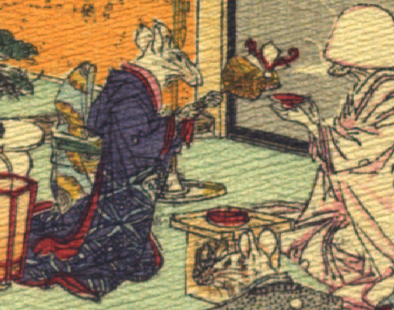

女の鼠。青紫色の着物に水色の帯を締めている。膝立ちになり、両手で注ぎ口に熨斗が付いた銚子を持って、花嫁の持つ盃に酒を注いでいる。
著作者：J.Dautremer／出典：親書誌：U426_nichibunken_0111：Le mariage de la souris／日付：2006／資源識別子：U426_nichibunken_0111_0008_0004
Copyright (c)2010- International Research Center for Japanese Studies, Kyoto, Japan. All rights reserved.